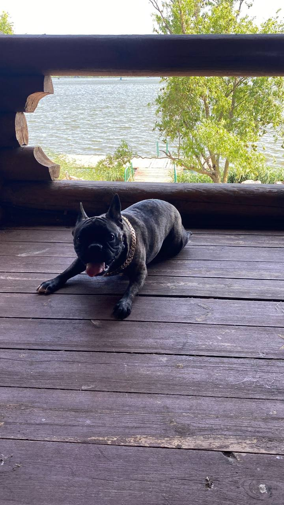
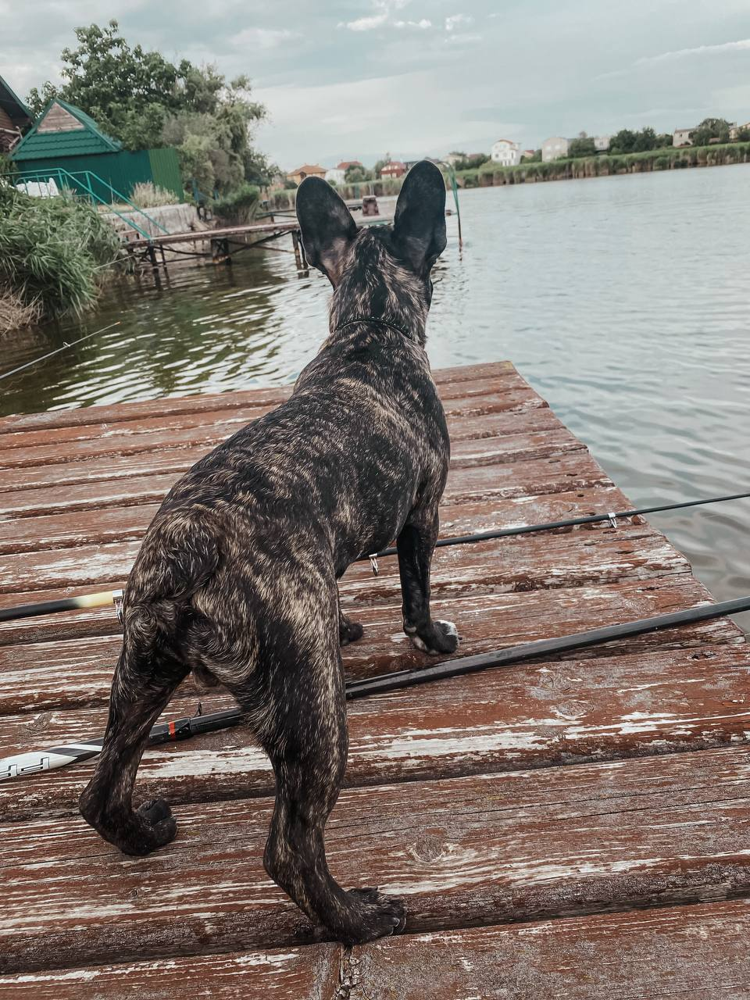
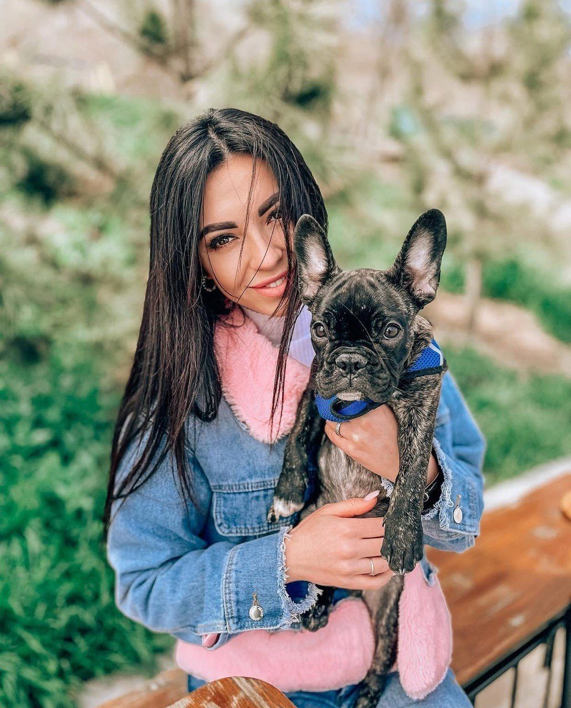

Окрема глава
Флокі
Чарівний французький бульдог.
І взагалі єдиний хлопець у світі, який беззаперечно "слухається" її.
Чарівний французький бульдог.
І взагалі єдиний хлопець у світі, який беззаперечно "слухається" її.



«Флокі такий самий непосидько, як і господиня. Ні хвилини спокою — це сімейне.»